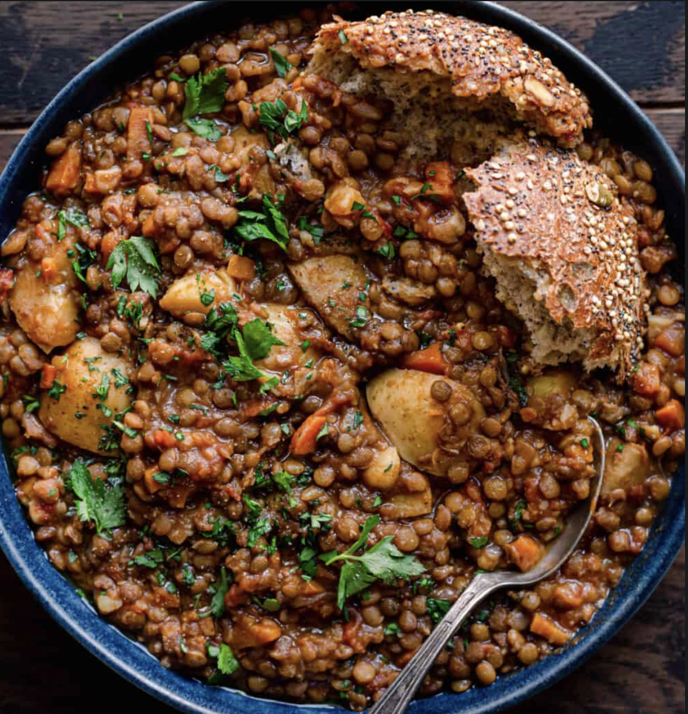

Spinach Lentil Dal

Description
This reciple will make an absolutely delicious and nutritious spinach lentil dal dish! Just follow this recipe to make a healhy, hearty instant pot dish that will last 3-4 days.
Ingredients
- 2 tablespoons extra virgin olive oil
- 1 large yellow onion, finely diced
- 3 medium carrots, diced (peeled or not)
- 6 garlic cloves, minced
- 5 cups (1.2 L) low-sodium vegetable broth
- 1 pound (450g) baby potatoes, quartered (peel left on)
- 1 1/2 cups (300g) French green lentils (AKA Puy lentils)
- 1 28-ounce (800g) can whole peeled tomatoes
- 1 ½ teaspoons kosher salt
- Freshly cracked black pepper to taste
- 1/2 teaspoon Dijon mustard
- 2 teaspoons aged balsamic vinegar
Steps
- Heat the oil in a large Dutch oven or soup pot over medium-high heat. Once hot, add the onion, along with a pinch or two of salt. Cook until onion has softened and golden brown, 6 to 8 minutes.
- Add the carrots and garlic and another pinch of salt. Cook until the carrots are just starting to soften, 2 to 3 minutes.
Pour in a bit of the vegetable broth to deglaze the pot and scrape up any browned bits. Add the remaining broth, lentils, potatoes, bouquet garni, crushed tomatoes (including their juices), 1 ½ teaspoons kosher salt, and pepper to taste. Stir well.
- Bring the soup to a boil. Then reduce heat to low, cover the pot partially, and simmer the soup for 40 to 50 minutes, or until the lentils are tender.
- Remove the bouquet garni. Stir in the dijon mustard and balsamic vinegar and taste. Add more salt and pepper to taste.